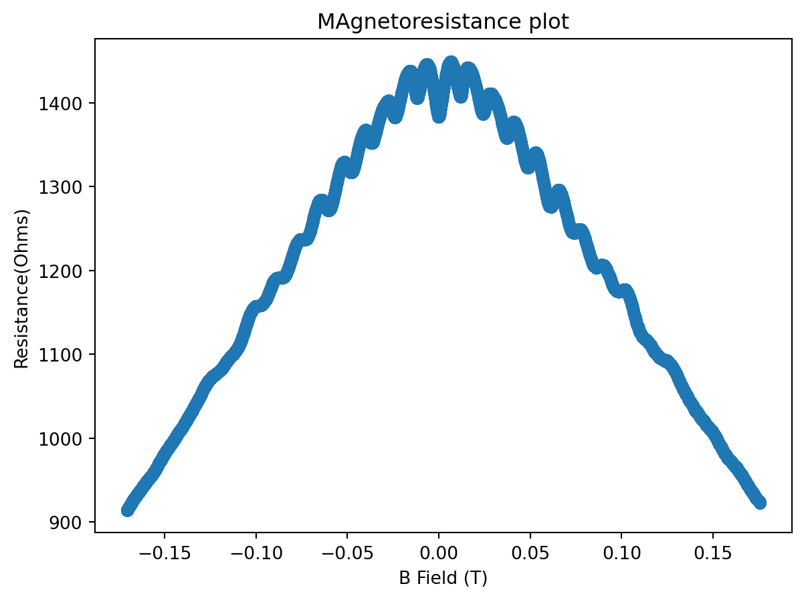
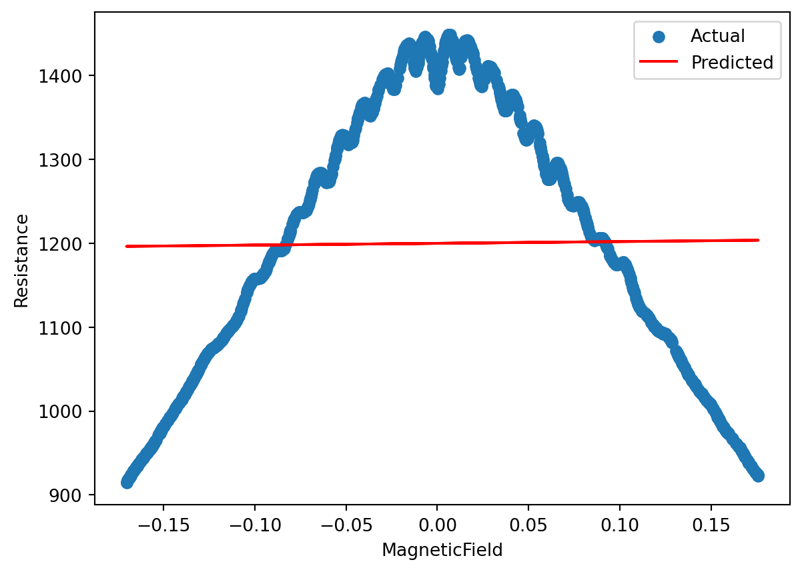
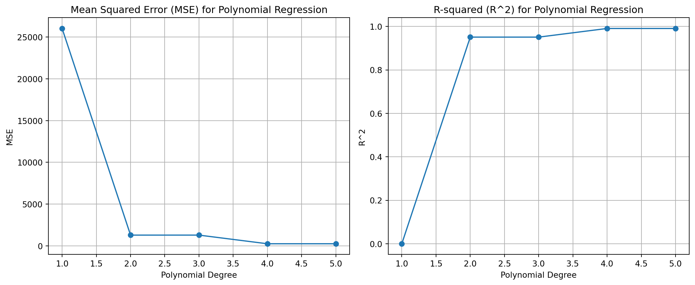
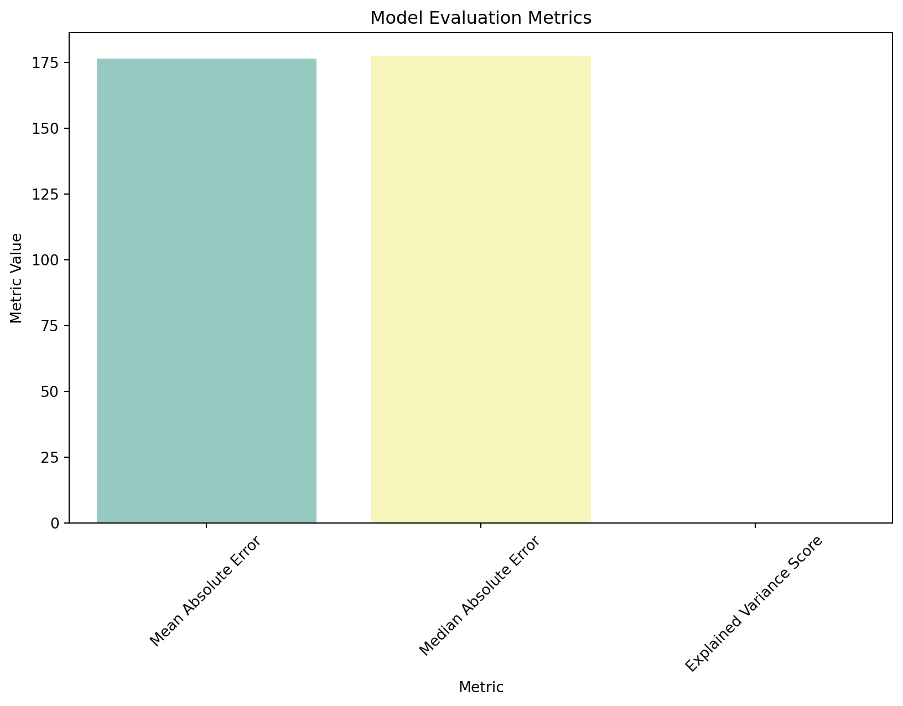
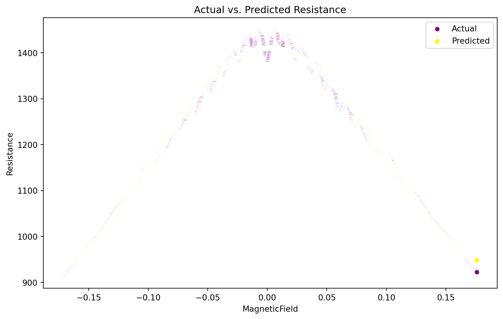
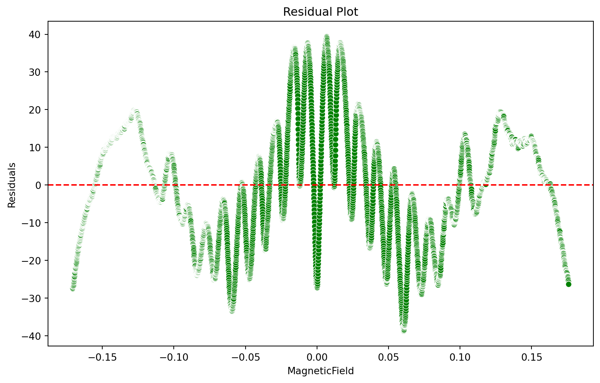

import pandas as pd
import numpy as np
import matplotlib.pyplot as pl
import seaborn as sns
from sklearn.model_selection import train_test_split
from sklearn.linear_model import LinearRegression
from sklearn.metrics import mean_squared_error, r2_score
from sklearn.preprocessing import PolynomialFeatures
from sklearn.pipeline import make_pipeline
from sklearn.metrics import mean_absolute_error, median_absolute_error, explained_variance_scoreImporting the required libraries
Importing the dataset
data=pd.read_csv('Small-Sq-Dev-7-27-2023-2.dat')
data.head()| Temp (K) | B Field (T) | SR830 1 X (V) | SR830 1 Y (V) | SR830 2 X (V) | SR830 2 Y (V) | P124A (V) | |
|---|---|---|---|---|---|---|---|
| 0 | 4.224 | -0.170673 | 0.0 | 0.0 | 0.0 | 0.0 | 0.000091 |
| 1 | 4.225 | -0.170633 | 0.0 | 0.0 | 0.0 | 0.0 | 0.000091 |
| 2 | 4.224 | -0.170581 | 0.0 | 0.0 | 0.0 | 0.0 | 0.000091 |
| 3 | 4.225 | -0.170527 | 0.0 | 0.0 | 0.0 | 0.0 | 0.000091 |
| 4 | 4.225 | -0.170471 | 0.0 | 0.0 | 0.0 | 0.0 | 0.000091 |
to identify the missing values
data.apply(pd.isnull).sum()/data.shape[0]Temp (K) 0.0
B Field (T) 0.0
SR830 1 X (V) 0.0
SR830 1 Y (V) 0.0
SR830 2 X (V) 0.0
SR830 2 Y (V) 0.0
P124A (V) 0.0
dtype: float64to obtain the required features and converting them into columns
new_data= data[["B Field (T)", "P124A (V)"]].copy()
new_data.columns = ["B_field", "Voltage"]
new_data.tail()| B_field | Voltage | |
|---|---|---|
| 5021 | 0.175474 | 0.000092 |
| 5022 | 0.175544 | 0.000092 |
| 5023 | 0.175622 | 0.000092 |
| 5024 | 0.175689 | 0.000092 |
| 5025 | 0.175751 | 0.000092 |
Using the relation:
\(Resistance(R) = Voltage(V)/ Current(I), from Ohm's law\)
new_data['resistance'] = new_data['Voltage'] / 100e-9
new_data.head()| B_field | Voltage | resistance | |
|---|---|---|---|
| 0 | -0.170673 | 0.000091 | 913.683 |
| 1 | -0.170633 | 0.000091 | 913.937 |
| 2 | -0.170581 | 0.000091 | 914.237 |
| 3 | -0.170527 | 0.000091 | 914.479 |
| 4 | -0.170471 | 0.000091 | 914.669 |
Visualizing the data:
pl.scatter(new_data['B_field'],new_data['resistance'])
pl.xlabel('B Field (T)')
pl.ylabel('Resistance(Ohms)')
pl.title('MAgnetoresistance plot')Text(0.5, 1.0, 'MAgnetoresistance plot')
First we check if the linear regression works here using the linear relation, if not then we explore other options:
# Split the data into training and test sets
X_train, X_test, y_train, y_test = train_test_split(new_data[['B_field']], new_data['resistance'], test_size=0.2, random_state=42)
# Linear regression model
linear_model = LinearRegression()
linear_model.fit(X_train, y_train)
# Predictions
y_pred = linear_model.predict(X_test)
# Model evaluation
mse = mean_squared_error(y_test, y_pred)
r2 = r2_score(y_test, y_pred)
print("Linear Regression:")
print(f"Mean Squared Error: {mse}")
print(f"R-squared: {r2}")
# Visualization
pl.scatter(X_test, y_test, label='Actual')
pl.plot(X_test, y_pred, color='red', label='Predicted')
pl.xlabel('MagneticField')
pl.ylabel('Resistance')
pl.legend()
pl.show()Linear Regression:
Mean Squared Error: 26034.309179215787
R-squared: 0.0001171342965614608
Clearly, we can see that first degree linear regression doesn’t work here, so we try to explore the polynomial regression if it works but for that also we are unknown about the degree of our polynomial so we first identify the best fitting model:
best_degree = None
best_model = None
best_mse = float('inf')
best_r2 = -float('inf')
# Trying diff polynomial degrees and selecting the best model
for degree in range(1, 6):
polyreg = make_pipeline(PolynomialFeatures(degree), LinearRegression())
polyreg.fit(X_train, y_train)
# Predictions
y_pred_poly = polyreg.predict(X_test)
# Model evaluation
mse_poly = mean_squared_error(y_test, y_pred_poly)
r2_poly = r2_score(y_test, y_pred_poly)
print(f"Polynomial Regression (Degree {degree}):")
print(f"Mean Squared Error: {mse_poly}")
print(f"R-squared: {r2_poly}")
if mse_poly < best_mse:
best_degree = degree
best_model = polyreg
best_mse = mse_poly
best_r2 = r2_poly
print(f"Best Polynomial Model (Degree {best_degree}):")
print(f"Mean Squared Error: {best_mse}")
print(f"R-squared: {best_r2}")Polynomial Regression (Degree 1):
Mean Squared Error: 26034.309179215787
R-squared: 0.0001171342965614608
Polynomial Regression (Degree 2):
Mean Squared Error: 1279.9466108684755
R-squared: 0.9508419187767698
Polynomial Regression (Degree 3):
Mean Squared Error: 1280.8042805805371
R-squared: 0.9508089788111415
Polynomial Regression (Degree 4):
Mean Squared Error: 244.7914936730683
R-squared: 0.990598451508402
Polynomial Regression (Degree 5):
Mean Squared Error: 244.71472498485105
R-squared: 0.9906013999137329
Best Polynomial Model (Degree 5):
Mean Squared Error: 244.71472498485105
R-squared: 0.9906013999137329Let’s try to visualize this:
# Initializing lists:
mse_values = []
r2_values = []
degrees = list(range(1, 6))
# Iterating:
for degree in degrees:
polyreg = make_pipeline(PolynomialFeatures(degree), LinearRegression())
polyreg.fit(X_train, y_train)
# Calculating MSE and R-squared
mse_poly = mean_squared_error(y_test, polyreg.predict(X_test))
r2_poly = r2_score(y_test, polyreg.predict(X_test))
mse_values.append(mse_poly)
r2_values.append(r2_poly)
pl.figure(figsize=(12, 5))
pl.subplot(1, 2, 1)
pl.plot(degrees, mse_values, marker='o', linestyle='-')
pl.title('Mean Squared Error (MSE) for Polynomial Regression')
pl.xlabel('Polynomial Degree')
pl.ylabel('MSE')
pl.grid(True)
pl.subplot(1, 2, 2)
pl.plot(degrees, r2_values, marker='o', linestyle='-')
pl.title('R-squared (R^2) for Polynomial Regression')
pl.xlabel('Polynomial Degree')
pl.ylabel('R^2')
pl.grid(True)
pl.tight_layout()
pl.show()
For the absolute error and variance score:
y_true = new_data['resistance']
y_true_subset = y_true[:min(len(y_true), len(y_pred))]
y_pred_subset = y_pred[:min(len(y_true), len(y_pred))]
mae = mean_absolute_error(y_true_subset, y_pred_subset)
med_ae = median_absolute_error(y_true_subset, y_pred_subset)
explained_var = explained_variance_score(y_true_subset, y_pred_subset)
# Creating a DFrame for visualization:
metric_values = pd.DataFrame({
'Metric': ['Mean Absolute Error', 'Median Absolute Error', 'Explained Variance Score'],
'Value': [mae, med_ae, explained_var]
})
pl.figure(figsize=(10, 6))
sns.barplot(x='Metric', y='Value', data=metric_values, palette='Set3')
pl.title("Model Evaluation Metrics")
pl.ylabel("Metric Value")
pl.xticks(rotation=45)
pl.show()C:\Users\poude\AppData\Local\Temp\ipykernel_10500\584074123.py:19: FutureWarning:
Passing `palette` without assigning `hue` is deprecated and will be removed in v0.14.0. Assign the `x` variable to `hue` and set `legend=False` for the same effect.
sns.barplot(x='Metric', y='Value', data=metric_values, palette='Set3')
From the above analysis, it is clear that the polynomial of degree 5 is the best option for us, so we can proceed our further analysis by using this degree:
X = new_data[['B_field']]
y = new_data['resistance']
degree = 5
polyreg = PolynomialFeatures(degree)
X_poly = polyreg.fit_transform(X)
model = LinearRegression()
model.fit(X_poly, y)
y_pred = model.predict(X_poly)Now, comparing the actual and predicted values of resistance through a plot.
pl.figure(figsize=(10, 6))
sns.scatterplot(x=X['B_field'], y=y, label='Actual', color='purple')
sns.scatterplot(x=X['B_field'], y=y_pred, label='Predicted', color='yellow')
pl.xlabel('MagneticField')
pl.ylabel('Resistance')
pl.legend()
pl.title('Actual vs. Predicted Resistance')
pl.show()
And the interpretation:
coefficients = model.coef_
intercept = model.intercept_
print("Coefficients:", coefficients)
print("Intercept:", intercept)Coefficients: [ 0.00000000e+00 9.27243643e+01 -2.94017978e+04 2.21700669e+03
4.63232977e+05 -1.43641132e+05]
Intercept: 1410.5964601492096Examining the model performance:
mse = mean_squared_error(y, y_pred)
r2 = r2_score(y, y_pred)
print("Mean Squared Error:", mse)
print("R-squared:", r2)Mean Squared Error: 249.07323073568003
R-squared: 0.9903722588383516Finally we calculate the residuals, which we also term as smoothing the curve that is removing any kind of background from the data and just finding the peak of resistance amplitude:
residuals = y - y_pred
# Create a residual plot
pl.figure(figsize=(10, 6))
sns.scatterplot(x=X['B_field'], y=residuals, color='green')
pl.axhline(y=0, color='red', linestyle='--')
pl.xlabel('MagneticField')
pl.ylabel('Residuals')
pl.title('Residual Plot')
pl.show()
This shows that if we deduct the parabola from the plot we get this actual relation which makes complete sense and it matches the plot that we get after we use savgol filter of parabola reduction. This proves that our model actually worked.